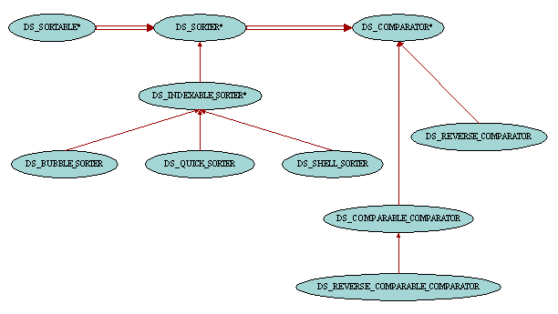

| Sortable Containers |

Some containers such as priority queues or binary search trees keep their items sorted. On the other hand some other containers do not necessarily keep their items sorted but provide facilities to sort them on demand according to various comparison criteria and sorting algorithms. These latter containers inherit from the class DS_SORTABLE. One can sort the container with feature sort and inspect that the container is sorted with the boolean query sorted.
Because there are many ways to sort a container, the algorithm for sorting items and the comparison criterion are not part of the container implementation. They are instead part of a separate object called a sorter which is passed as argument to the routines sort and sorted from DS_SORTABLE. This allows the container to be sorted using different criteria. For example a list of persons can be sorted by name at some point in the execution of the program and later sorted by age. One would just have to use two different sorters when calling sort. These sorter objects are instances of class DS_SORTER. This class has two routines, sort and sorted, which are called by delegation from their counterparts in DS_SORTABLE. In addition to these two routines, DS_SORTER provides two other sets of routines: reverse_sort and reverse_sorted for sorting the items in the data structure in decreasing order, and sort_with_comparator and sorted_with_comparator for sorting the items using the comparison criterion provided by an instance of class DS_COMPARATOR. DS_SORTER is a deferred class, various sorting algorithms being implemented in its descendant classes.
Class DS_COMPARATOR and its descendants provide sorters with a comparison criterion. The boolean query less_than compares two objects and returns true if the first one is considered smaller than the second one. This routine is deferred in DS_COMPARATOR but is given a concrete implementation in DS_COMPARABLE_COMPARATOR based on the fact that the objects involved in the comparison are of type COMPARABLE. It is easy to write other descendant classes of DS_COMPARATOR in order to customize the comparison criterion used in sorters.
When one wants to sort the items in a data structure in decreasing order, one can use DS_REVERSE_COMPARATOR in order to reverse the comparison criterion of a given comparator. The class DS_REVERSE_COMPARABLE_COMPARATOR is also available as a shorthand when the objects to be compared are of type COMPARABLE.
Items stored in containers of type DS_INDEXABLE can be accessed by an integer index between 1 and count (the number of items in the container). This is an interesting property which is taken into account for the implementation of sorters for such containers. In addition to the sort and sorted routines inherited from DS_SORTER, class DS_INDEXABLE_SORTER also provides two new features for sorting the items stored within two given indexes in the container, subsort and subsorted. A call to sort (a_container) is therefore equivalent to subsort (a_container, 1, a_container.count). Similarly there are routines to sort ranges of items in reverse order or using a DS_COMPARATOR comparison criterion: reverse_subsort, reverse_subsorted, subsort_with_comparator and subsorted_with_comparator.
Routines sort, sorted, subsort and subsorted use comparator as their comparison criterion. This attribute is typically set by the creation procedure of the sorter in descendant classes of DS_INDEXABLE_SORTER. On the other hand reverse_sort, reverse_sorted, reverse_subsort and reverse_subsorted rely on the DS_REVERSE_COMPARATOR version of comparator.
Note that the implementation of the sorting algorithms in DS_INDEXABLE_SORTER and its descendant classes is of course heavily based on calls to item and put from DS_INDEXABLE. Therefore the use of these sorters will be optimal for containers whose implementation is based on arrays such as DS_ARRAYED_LIST for which item and put are efficient. However these two routines can be very time-consumming in containers implemented with linkable cells such as DS_LINKED_LIST and it is not recommended to use this kind of sorters in this case. If you need to sort a list, you are better off using an arrayed list rather than a linked list. New sorter classes with better algorithms to deal with linked containers will be provided in future releases.
The class DS_BUBBLE_SORTER implements the bubble sort algorithm.
The class DS_QUICK_SORTER implements the quick sort algorithm.
The class DS_SHELL_SORTER implements the shell sort algorithm.
|
Copyright © 1999-2016, Eric
Bezault mailto:ericb@gobosoft.com https://www.gobosoft.com Last Updated: 26 December 2016 |